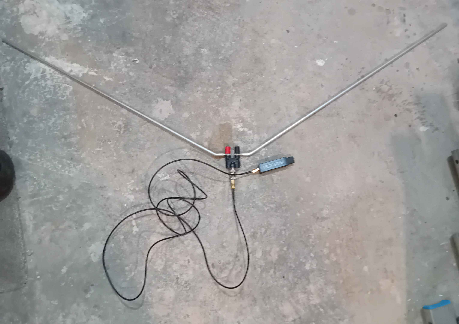
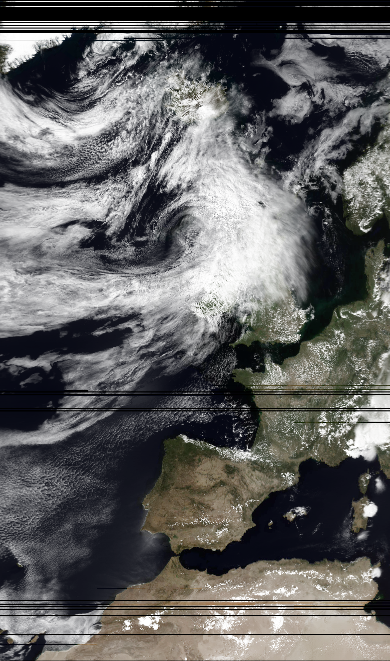

Downloading Photos from Space
Contents
In this short post I'll describe how I went about receiving photograph data from a Meteor-M satellite using an SDR (software defined radio). I should mention I am following this excellent guide.
Equipment
Hardware
- https://www.amazon.co.uk/dp/B0GHYCPQY3
- https://www.amazon.co.uk/dp/B0C1BFXMWD
- https://www.amazon.co.uk/dp/B097LDV3XS
- https://www.amazon.co.uk/dp/B01HA642SW
Software
The Target
Meteor-M №2-4 is a member of the Russian Meteor-M series of weather satellites. This particular one was launched in February 2024. It's in a polar orbit, meaning it passes over the entirity of Earth's surface. Its ~800km altitude means it passes overhead twice a day.
The satellite transmits at $137.9$ MHz. That is a wavelength of $2.18$ m, giving a total antenna length of $1.06$ m.
Meteor-M №2-3 also transmits, but the guide advises that an antenna deployment failure means its signal is weak and inconsistant.
Construction
I bought a Nooelec RTL-SDR. An RTL-SDR is a usb dongle that allows you to receive and decode a wide range of radio frequencies with a computer. To use it, I built an antenna from a banana plug and two 3mm aluminium tubes, cut to $54$ cm (half the total antenna length). When the parts came, I went to the garage to construct the antenna, with some help.
The aluminium tubes were $6$ mm in diamater and $1$ m long. For each of the two tubes, we flattened the end in the vice and drilled a hole the same size as to fit on the banana plug. We bent each to 60 degrees about 20mm from the end, for a total of 120 degrees between the two ends of the antenna.

That was enough to make the antenna. Using an adapter, I could connect the coaxial cable which then went to the RTL-SDR. The guide recommended using a filtered LNA for receiving a signal. I thought the project was expensive enough as is, so skipped it and hoped turning up the gain to max and standing in a field would be good enough (it was).
Receiving
I went up to a field nearby when my satellite tracker app said it would be overhead. I set up my laptop and connected the antenna, and waited for it to come overhead. From the time it came over the horizon to going down again was about 15 minutes. We had to keep the antenna pointed steadily at the spot in the sky where the satellite was, which turned out to be surprisingly difficult as it was very sensitive. But, we managed to read the signal well for the entire 15 minutes.
Every so often there was a diffuse burst of signal centred around $138.4$ MHz. I couldn't figure out what was causing it, but despite the tail of the strange signal overlapping with the satellite's frequency, it didn't seem to affect the final result.
I went down to the pub to process the radio data and see if we had picked up anything. What appeared was a pretty clear photo of northern Europe, taken about an hour before the satellite had come overhead. Not a bad result at all.

July 2026